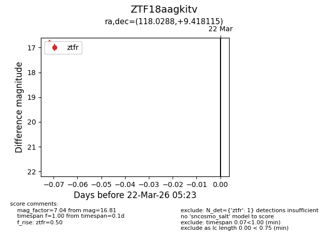
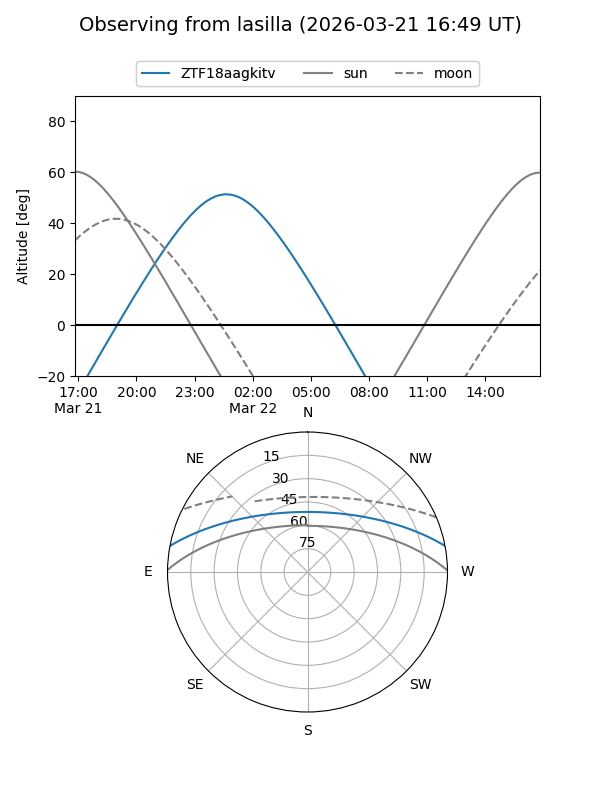
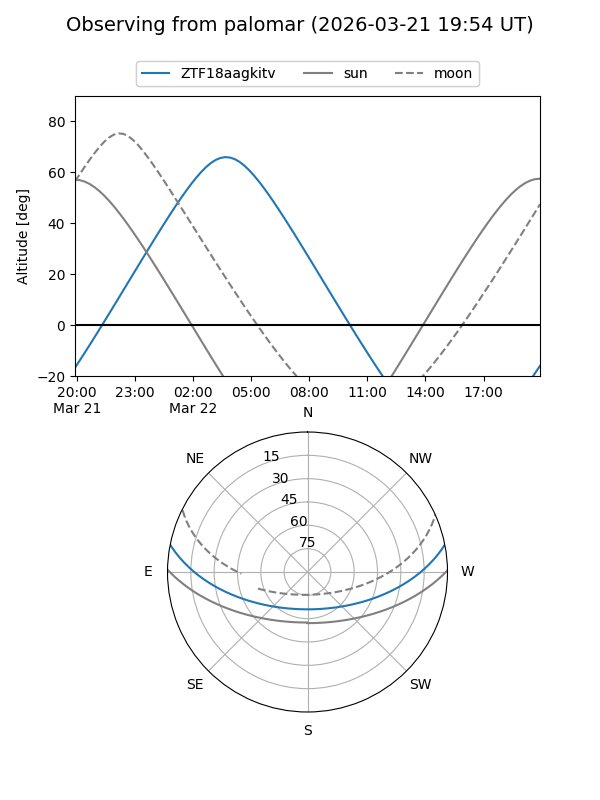
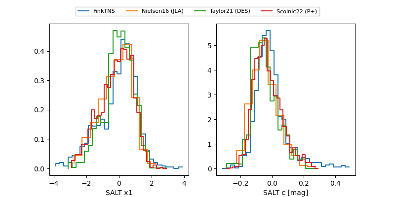

ZTF18aagkitv
Target ZTF18aagkitv at 2026-03-22 05:25
Aliases and brokers:
FINK: link
Lasair: link
ALeRCE: link
alt names
ZTF18aagkitv (ztf,fink_ztf)
Coordinates:
equatorial (ra, dec) = 118.0288,+9.41812
equatorial (HMS+DMS) = 07:52:06.92,+09:25:05.21
galactic (l, b) = (211.2520,+17.71984)
Flags:
Photometry:
last ztfr=16.81
1 ztfr detections
Lightcurve

Visibility


Additional plots
